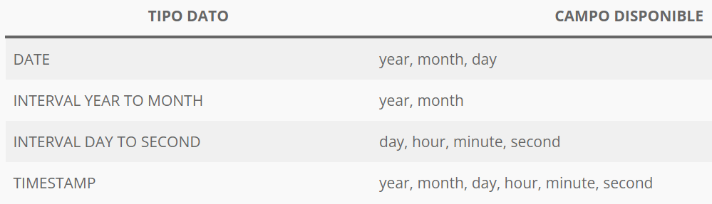
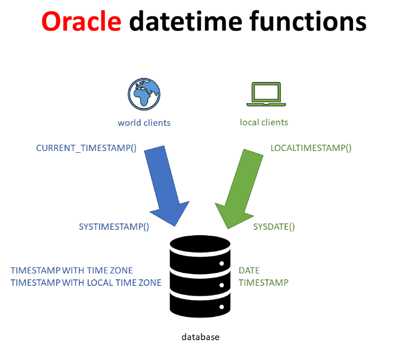

Tipus de dates
En PL/SQL d’Oracle, els principals tipus de dades relacionats amb dates i temps són aquests
- DATE : Emmagatzema: data i hora (any, mes, dia, hora, minut i segon)
- TIMESTAMP : emmagatzema: data + hora amb fraccions de segon. Precisió: fins a 9 decimals (nanosegons)
- TIMESTAMP WITH TIME ZONE : Inclou la zona horària
- TIMESTAMP WITH LOCAL TIME ZONE : Desa la data en UTC. Es mostra segons la zona horària de la sessió
- INTERVAL YEAR TO MONTH : Per representar diferències de temps en anys i mesos.
- INTERVAL DAY TO SECOND : Per diferències en dies, hores, minuts, segons i fraccions.
Depenent del tipus declarat, es podrà guardar més o menys precisió d'informació.
SET SERVEROUTPUT ON
DECLARE
vd1 DATE; -- DATE és el TIPUS
vd2 TIMESTAMP; -- TIMESTAMP és el TIPUS
BEGIN
vd1 := SYSDATE; -- SYSDATE és una funció que torna (fins al segon )
-- la data/hora de hui en l'instant que s'executa
vd2 := SYSTIMESTAMP; -- SYSTIMESTAMP és una funció que torna la data/hora
-- de hui, amb precisió, en l'instant que s'executa
dbms_output.put_line(vd1);
dbms_output.put_line(vd2);
vd1 := '7/7/26'; -- Assignació directa (si el format coincideix !!)
dbms_output.put_line(vd1);
vd1 := '7/7/2026'; -- També ho converteix bé
END;
Visualització / Presentació de dates
Encara que una data estiga en un format concret, per exemple DATE, es pot visualitzar de diferents formes. Una cosa es el valor i una altra com es mostra.
select sysdate from dual;
-- 06/03/26 . Format de visualització per defecte
-- (la que estiga per defecte en la instal·lació)
select to_char(sysdate,'dd-mm-yyyy hh:mi:ss') from dual;
-- 06/03/26 10:07:22 Així imposem el format d'eixida
select to_char(sysdate,'dd-mm-yyyy hh:mi:ss am') from dual;
-- 06/03/26 10:07:22 PM
select to_char(sysdate,'dd-mm-yyyy hh24:mi:ss am') from dual;
-- 06/03/26 22:07:22 PM
alter session set nls_date_format='dd-mm-yyyy hh:mi';
-- Es canvia el format de visualització
select sysdate from dual;
-- 06/03/26 10:07
El posar am o pm en el format sols indica que s'ha de mostrar la franja que pertoque del valor mostrat.
També es pot visualitzar amb DBMS_OUTPUT..
set SERVEROUTPUT on begin dbms_output.put_line(sysdate); dbms_output.put_line(to_char(sysdate,'dd-mm-yyyy hh:mi:ss')); dbms_output.put_line(to_char(sysdate,'dd-mm-yyyy hh:mi:ss am')); dbms_output.put_line(to_char(sysdate,'dd')); dbms_output.put_line(to_char(sysdate,'d')); dbms_output.put_line(to_char(sysdate,'ddd')); dbms_output.put_line(to_char(sysdate,'day')); end;
I també es poden canviar els caràcters de separació al gust del programador.
set SERVEROUTPUT on begin dbms_output.put_line(to_char(sysdate,'dd-mm-yyyy hh:mi:ss')); dbms_output.put_line(to_char(sysdate,'dd/mm/yyyy hh:mi:ss')); dbms_output.put_line(to_char(sysdate,'dd.mm.yyyy hh:mi:ss')); dbms_output.put_line(to_char(sysdate,'dd mm yyyy hh_mi-ss')); end;
Operacions sobre dates
set SERVEROUTPUT on
alter session set nls_date_format='dd-mm-yyyy hh24:mi:ss';
declare f1 date:= '31/01/2024'; f2 date;
begin
f2:=sysdate;
dbms_output.put_line( f1);
dbms_output.put_line( f2);
dbms_output.put_line( f2+1); -- Suma un dia a la data f2
dbms_output.put_line( f2 - f1); -- Calcula la Diferència en dies(amb decimals) entre les dos dates
if f2>f1 then dbms_output.put_line('hui es després del '||f1);
end if;
dbms_output.put_line( f2 - 1); -- Resta un dia
dbms_output.put_line( f2 + 2/24); -- Resta 2 hores !!
end;
to_char(valor_data, format)
-- D'una data, converteix a un strings
to_date (valor_string, format)
-- Des d'un string, converteix a una data
Algunes conversions a tindre en compte..
set SERVEROUTPUT on
begin
dbms_output.put_line( 5 + '6' ); -- 11
dbms_output.put_line( '5' + '6' ); -- 11
dbms_output.put_line(' ');
dbms_output.put_line( '3' || 7 ); -- '37'
dbms_output.put_line( 35 || 8 ); -- '358'
end;
Extracció d'informació (parcial) d'una data
set SERVEROUTPUT on declare f1 date:= sysdate; dia number; mes number; begin dia := to_char(f1,'dd'); mes := to_char(f1,'mm'); dbms_output.put_line( f1 ); dbms_output.put_line( dia ); -- 6 dbms_output.put_line( mes ); -- 3 end;
Composició de dates
set SERVEROUTPUT on alter session set nls_date_format='dd-mm-yyyy hh24:mi:ss'; declare f1 date; dia number; mes number; anys number; begin dia := 4 ; mes := 6 ; anys :=2026; f1 := to_date ( dia||'-'||mes||'-'||anys, 'dd-mm-yyyy'); dbms_output.put_line( f1 ); end;
Funcions de dates en Oracle
add_months(data, num ) compte amb l’últim dia del mes last_day(data) l’últim dia del mes al que pertany la data next_day(data,dia) pròxim ‘dia’ després de data (eg dia=lunes) round(data[,mascara]) ..de data (year, month, trunc(data[,mascara]) ..de data extract(part from data) ..de data months_between(data1,data2) num de mesos entre 2 dates
add_months
set SERVEROUTPUT on
alter session set nls_date_format='dd/mm/yyyy';
begin
dbms_output.put_line( add_months('15/01/2024',1) );
dbms_output.put_line( add_months('30/03/2024',1) );
dbms_output.put_line( add_months('31/03/2024',1) );
dbms_output.put_line( add_months('28/02/2024',1) );
dbms_output.put_line( add_months('29/02/2024',1) );
dbms_output.put_line( add_months('29/02/2024',-1) );
end;
last_day i altres
set SERVEROUTPUT on
alter session set nls_date_format='dd/mm/yyyy';
begin
dbms_output.put_line( last_day('15/01/2024'));
dbms_output.put_line( next_day('15/01/2024','Lunes') );
dbms_output.put_line( to_char( sysdate,'dd-mm-yyyy hh24:mi') );
dbms_output.put_line( round(sysdate) );
dbms_output.put_line( trunc(sysdate) );
dbms_output.put_line( months_between( sysdate, '31/3/2023') );
dbms_output.put_line( extract(day from sysdate) );
end;

round
set SERVEROUTPUT on
alter session set nls_date_format='dd/mm/yyyy hh24:mi';
begin
dbms_output.put_line( round( to_date('06/03/2026 11:00')) ); -- 06/03/2026 00:00
dbms_output.put_line( round( to_date('06/03/2026 14:00')) ); -- 07/03/2026 00:00
dbms_output.put_line('');
dbms_output.put_line( round( to_date('06/03/2026'),'month' ) ); -- 01/03/26 00:00
dbms_output.put_line( round( to_date('16/03/2026'),'month' ) ); -- 01/04/26 00:00
dbms_output.put_line('');
dbms_output.put_line( round( to_date('06/03/2026'),'year' ) ); -- 01/01/26 00:00
dbms_output.put_line( round( to_date('16/07/2026'),'year' ) ); -- 01/01/27 00:00
end;
==> Models de formats per a round i trunc
des de la documentació oficial d'ORACLE
localtimestamp
La funció localtimestamp torna data en tipus TIMESTAMP
set SERVEROUTPUT on declare vd1 date := sysdate; vd2 timestamp := localtimestamp; begin dbms_output.put_line( to_char( 'DATE ' || vd1 )); dbms_output.put_line( to_char( 'DATE ' || to_char( vd1,'hh24:mi:ss' ))); dbms_output.put_line( to_char( 'timestamp ' || vd2 )); dbms_output.put_line( to_char( 'timestamp ' || to_char (vd2,'hh24:mi:ss.ff6' ))); end;
set SERVEROUTPUT on alter session set nls_date_format='dd--mm--yyyy'; alter session set nls_timestamp_format='dd-mm-yyyy hh24_mi_ss.ff'; declare vd1 date := sysdate; vd2 timestamp := localtimestamp; begin dbms_output.put_line( to_char( 'DATE ' || vd1 )); dbms_output.put_line( to_char( 'timestamp ' || vd2 )); end;
systimestamp
La funció systimestamp torna data en tipus timestamp with time zone
set SERVEROUTPUT on alter session set nls_date_format='dd--mm--yyyy'; alter session set nls_timestamp_format='dd-mm-yyyy hh24_mi_ss.ff'; alter session set nls_timestamp_tz_format='dd/-mm/-yyy hh24::mi::ss.ff'; declare vd1 date := sysdate; vd2 timestamp with time zone:= systimestamp; begin dbms_output.put_line( to_char( 'DATE ' || vd1 )); dbms_output.put_line( to_char( 'timestamp ' || vd2 )); end;
Altres Consideracions
SYSDATE and SYSTIMESTAMP return the system date and time CURRENT_DATE and LOCALTIMESTAMP and CURRENT_TIMESTAMP return the current date and time in the session time zone. CURRENT_DATE returns a DATE value LOCALTIMESTAMP returns a TIMESTAMP value CURRENT_TIMESTAMP returns a TIMESTAMP WITH TIME ZONE value
| Funció | Tipus retornat | Precisió | Zona horària | | ------------------- | -------------------------- | ----------------- | ------------ | | `SYSDATE` | `DATE` | Segons | Servidor | | `CURRENT_DATE` | `DATE` | Segons | Sessió | | `LOCALTIMESTAMP` | `TIMESTAMP` | Fins a 9 decimals | Sessió | | `SYSTIMESTAMP` | `TIMESTAMP WITH TIME ZONE` | Fins a 9 decimals | Servidor | | `CURRENT_TIMESTAMP` | `TIMESTAMP WITH TIME ZONE` | Fins a 9 decimals | Sessió |
Si es necessita precisió TIMESTAMP però sense zona horària, a partir de l’hora del servidor:
SELECT CAST(SYSTIMESTAMP AS TIMESTAMP) FROM dual;
Calendari JULIÀ
Instaurat per Juli Cèsar l'any 46 a. C., que era una altra versió del calendari egipci, el primer calendari solar conegut
El calendari julià tenia anys de traspàs cada 4 anys, sense execpció, (no com el calendari gregorià). L’any de traspàs tenia 366 dies. Els altres anys tenien 365 dies.
Problema del calendari julià. L’any solar real dura aproximadament 365,2422 dies, però el calendari julià assumia 365,25 dies. Diferència: Error d'uns 11 minuts i 14 segons per any. Amb el pas dels segles, això va provocar un desplaçament gradual de les estacions (uns 10 dies acumulats al segle XVI). Solució -> El calendari gregorià
Calendari GREGORIÀ
Aquest calendari va ser dissenyat per a corregir els errors introduïts pel calendari julià. El julià tenia un xicotet error, pel fet que establia la duració de l'any en 365 dies i 6 hores, quan en realitat era de 365 dies, 5 hores, 48 minuts i 45 segons. D'aquesta manera, cada any la data oficial s'endarreria 11 minuts i 15 segons respecte a l'astronòmica. La diferència era mínima, però va acumular un desfasament de quasi 10 dies en els més de 1.600 anys que va estar vigent.
Aquest calendari gregorià està dividit en tres tipus d'anys: l'any comú de 365 dies, l'any de traspàs amb 366 dies i l'any secular que és un any que tanca segle.
Càlcul Any de traspàs amb 366 dies
a es divisible per b si el resto de la divisió es 0 1. Si l'any és divisible per 4, vaja al pas 2. En cas contrari, vaja al pas 5. (365d) 2. Si l'any és divisible per 100, vaja al pas 3. En cas contrari, vaja al pas 4. (366d) 3. Si l'any és divisible per 400, vaja al pas 4. (366d) En cas contrari, vaja al pas 5. (365d) 4. L'any és un any de traspàs (té 366 dies). 5. L'any no és un any de traspàs (té 365 dies).